How to Use ownCloud with DreamObjects
Overview
ownCloud is a free and open source file hosting application that provides universal file access, synchronization, and sharing of your data using a single interface regardless of where the data is located. You can access, sync, and share nearly anything such as contacts, calendars, bookmarks, and backups inside ownCloud via the web, your computer, or mobile devices.
Since version 6.0, ownCloud allows you to use DreamObjects as an external storage option, which gives you total freedom and control over your data.
This guide describes how to set up ownCloud to connect to DreamHost’s DreamObjects cloud storage service.
How to configure ownCloud to work with DreamObjects
Before you can begin using ownCloud with DreamObjects, you must install ownCloud on your DreamHost account by following this step-by-step guide.
You also must enable DreamObjects on your DreamHost account. If you haven’t enabled DreamObjects nor created the required keys and buckets, please review the following articles:
Configuring ownCloud
Open ownCloud.
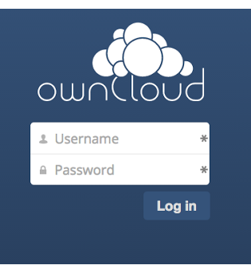Log into your ownCloud installation using your ownCloud administrator username and password.
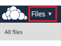Once you’re logged in, click on ‘Files’ next to the ownCloud logo in the upper left hand corner.
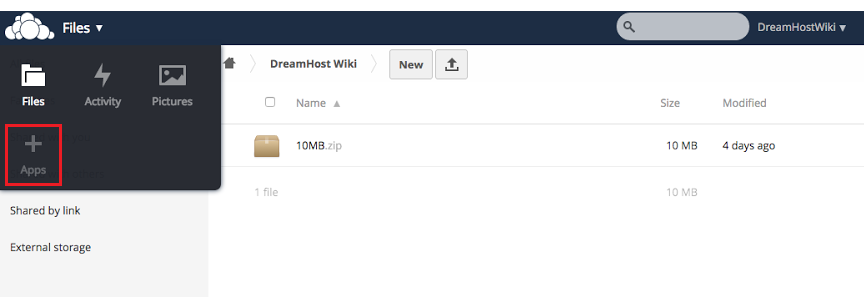- From the ‘Files’ dropdown menu, click on the ‘Apps’ icon.
The applications page opens when you click the Apps icon.
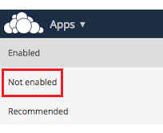
Enable the ‘External Storage Support’ application to connect to DreamHost Objects.
- By default, this application is disabled.
- Click the ‘Not enabled’ section of the ownCloud menu on the upper left.
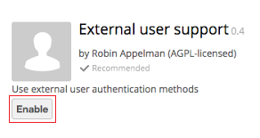Locate Enable External Storage Support from the list of applications, and then click the Enable button.
It can take a few moments to enable after clicking the Enable button. Once External Storage Support is enabled, the option to disable the application appears:
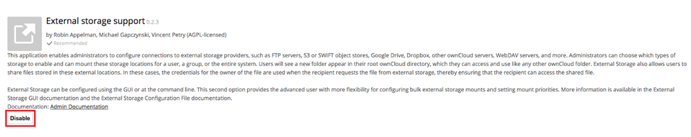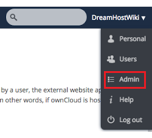On the top right, click your username and then select ‘Admin’.
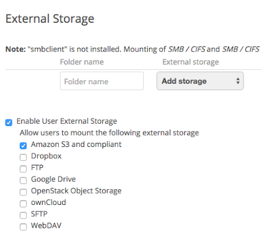- Enter the following on the External Storage Section:
- Check ‘Enable External User Storage’ check box.
- Check the ‘Amazon S3 and compliant’ check box.
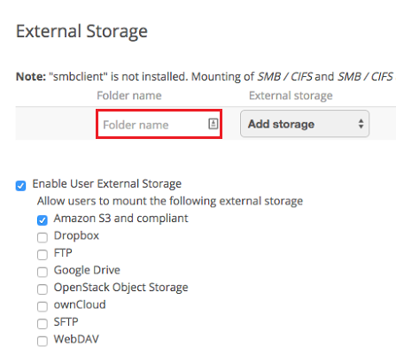
Enter the folder name to be used inside of ownCloud. This can be anything you’d like.
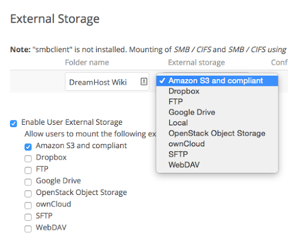After you’ve entered the folder name, click the drop down menu for external storage and then select ‘Amazon S3 and compliant’.
Setting up ownCloud with DreamObjects
The following describes how to connect ownCloud with DreamObjects using an access key, secret key, and bucket name.
To locate and copy your access keys, please see:
Note
Your bucket name cannot contain an underscore as ownCloud will fail to connect.
Scroll down to the External Storage section.
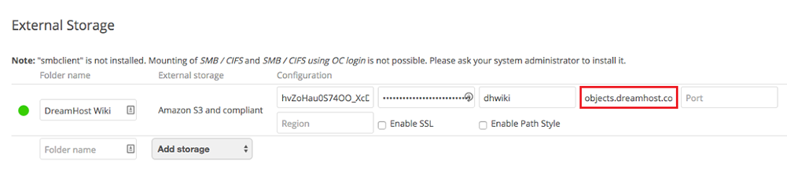- Enter objects-us-west-1.dream.io into the DreamObjects hostname field.
- You’ll see a green icon indicating the connection once you enter the hostname.
- You can leave the fields empty for port and region.
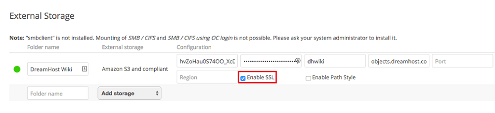
- Click the ‘Enable SSL’ checkbox to secure the connection to DreamObjects.
You should see the green circle next to the folder name if ownCloud successfully connects to your DreamObjects bucket:
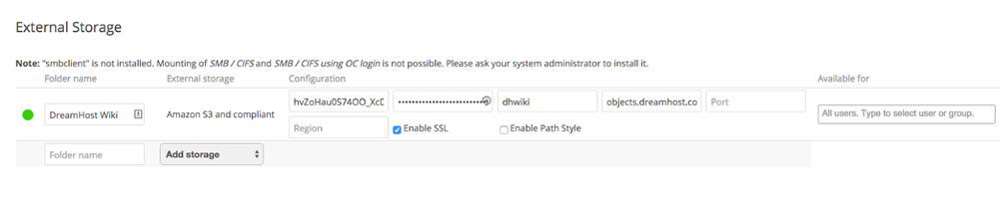
Make the following selections as needed:
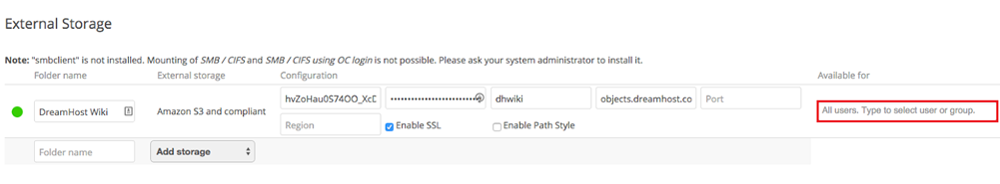- If you have multiple users of your ownCloud installation, you can limit who has access to the folder using the ‘Available For’ section to the right of the configuration information.
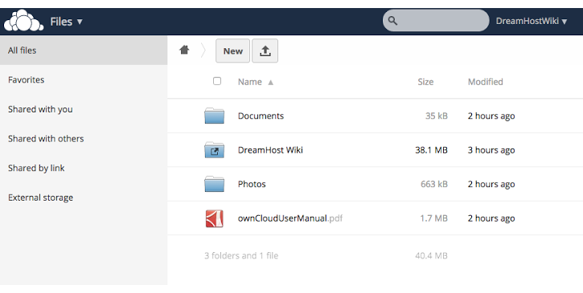- To see your files, navigate back to the ‘Files’ section by clicking on the ‘Apps’ drop down menu in the upper left and then clicking on ‘Files’. You’ll now see the folder name you specified in the Files section.
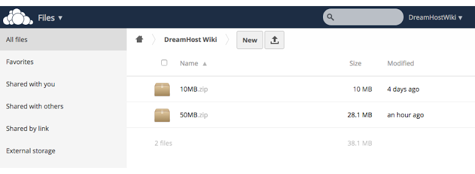- Clicking on this folder will show you the data in your DreamObjects bucket linked to ownCloud. Anything you keep, upload, or create there is stored in DreamObjects. Deleting an object inside ownCloud will remove the object from DreamObjects.
- If you wish to connect additional buckets, simply create a new folder and connect this bucket to the folder via the ‘Admin > External Storage’ section of the ownCloud panel. You can connect as many buckets as you’d wish with ownCloud.
Uploading large files inside ownCloud to DreamObjects
If you plan to upload large files to DreamObjects using ownCloud, you’ll need to be aware of some limitations and make some configuration changes since uploading large files can be very memory intensive.
A Web VPS with at least 512MB of memory is recommended, and required for extremely large file sizes. DreamObjects’ objects are limited to 10TBs in size, but must be uploaded in 5GB chunks. ownCloud does not support multi-part file uploads so you are limited to 5GB file uploads via ownCloud.
ownCloud uses an .htaccess file located in the ownCloud folder on the server to set the following custom PHP parameters:
php_value upload_max_filesize 513M
php_value post_max_size 513M
php_value memory_limit 512M
php_value mbstring.func_overload 0
php_value always_populate_raw_post_data -1
If you intend to upload files larger than 513M, it’s suggested that the domain is configured to use the latest PHP version. You’ll also need to create custom PHP settings to set the desired upload size, execution time, and increased PHP memory usage.